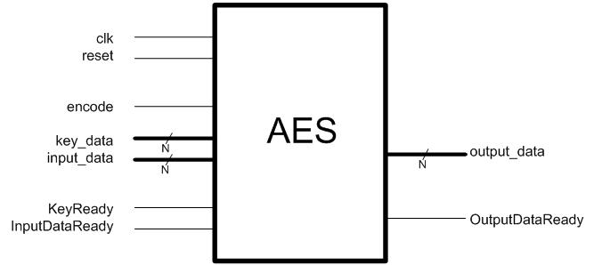

EEE6225 Systems Design
| 128 bit AES (Rijndael Block Cipher) Design Project |
| 1. Introduction |
| In this exercise, you will design and implement in hardware a simple data security system based on the Advanced Encryption Standard (AES). By the end of this module, it is expected that you will have an understanding of the methodology used in System Design using a Hardware Description Language such as VHDL. You will also gain exposure to Information Security, an important aspect of Data Communications. |
| The (AES) is the new digital encryption standard
designed to replace the older Digital Encryption Standard (DES). It is
a Symmetric Key Cryptosystem, which means that it uses the same
key for encrypting and decrypting. It is also known as a Block
Cipher, as data is processed in blocks of 128 bits at a
time. The algorithm behind the AES is known as the Rijndael Block
Cipher (named after its developers Vincent Rijmen and Joan Daemen). |
| 2. Project Specifications |
| After an initial period of individual work you will be formed into small groups. Effective teamwork is a key aspect of this assignment. Each group is expected to produce a working AES cryptosystem implemented on Field Programmable Gate Array (FPGA) using VHDL. Groups will normally comprise 5 members. One member will be assigned the role of 'System Architect', who will be responsible for system partitioning, testing and validation and coordinating group activities. An important part of the task is to divide the work fairly between group members. Design constraints in terms of speed and area will be assigned to each group. |
The specifications are as follows:
entity AES is
Port( clk,rst : in std_logic; -- clock and reset lines encode : in std_logic; -- 1=encrypt, 0=decrypt key : in std_logic_vector(N-1 downto 0); -- the key input input_data : in std_logic_vector(N-1 downto 0); -- the plain/cipher text input output_data : out std_logic_vector(N-1 downto 0); -- the plain/cipher text output KeyReady : in std_logic; -- indicates key is ready (handshake line) InputDataReady : in std_logic; -- indicates data input ready (handshake line) OutputDataReady : out std_logic); -- indicates your module has output data ready end AES; 
|
| 3. Design Constraints |
Each group will aim for a design
which is optimal in terms of EITHER highest throughput or lowest
area.
At the start of the group phase each group will be assigned a target
design constraint. Typically this is:
|
| 4. Milestones, Deliverables & Time-scales |
Semester 1 week 6
|
| 5. Documentation |
|
You are EACH required to keep and maintain an up-to-date logbook throughout the project. This logbook will be handed in with the Final Report for assessment. Your final report should detail your design methodology (in particular design partitioning and choice of modules used). You will also be required to hand in your VHDL code. The code should be meaningful and indicative (i.e. sensible signal and modules names and comments where appropriate. Plagarism: If you copy someone elses code / ideas / work without stating an appropriate reference (this includes figures too) in any handed in work YOUR MARK IS VERY LIKELY TO BE SIGNIFICANTLY REDUCED and in serious cases the university may take disciplinary action. |